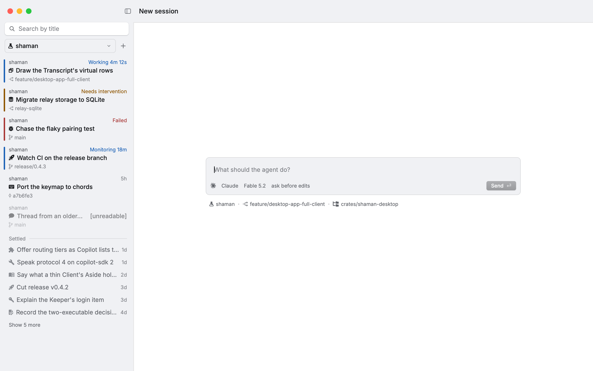

How a Session begins in a window
a: the TUI's Landing, the composer centred and each picker a dialog over the window · b: the composer docked at the
foot where an open Session keeps it, a popover from each reading · c: the place laid out as three fields, one browser
opening in place under them. Click a picture for its full size.
The Landing: the main Worktree of a Repository, on this machine The same, dark A linked Worktree and a subdirectory of it 
a · centred, dialogs b · docked, popovers c · laid out, one browser in place The same, dark The same, 1680 pt The same, 960 pt The same, 720 pt: the Sidebar gives way The same, as Windows frames it The same, as Linux frames it appearance.landingPage set to Fancy The same, dark A draft typed The Workspace Picker The same, dark The same, 1680 pt The same, 960 pt The same, 720 pt The Workspace Picker with a query typed: the Browse row stands down A Workspace its Server cannot read was chosen: nothing opens, and the picker says why a · centred, dialogs b · docked, popovers c · laid out, one browser in place The Worktree Selector a · centred, dialogs b · docked, popovers c · laid out, one browser in place The same, dark a · centred, dialogs b · docked, popovers c · laid out, one browser in place The Directory Browser, from the Landing a · centred, dialogs b · docked, popovers c · laid out, one browser in place The same, dark a · centred, dialogs b · docked, popovers c · laid out, one browser in place The same, 1680 pt a · centred, dialogs b · docked, popovers c · laid out, one browser in place The same, 960 pt a · centred, dialogs b · docked, popovers c · laid out, one browser in place The same, 720 pt a · centred, dialogs b · docked, popovers c · laid out, one browser in place The Directory Browser from the Workspace Picker's Browse row (in b a real window opens the system's folder dialog here instead) a · centred, dialogs b · docked, popovers c · laid out, one browser in place A pending Worktree intent, and a draft a · centred, dialogs b · docked, popovers c · laid out, one browser in place A Worktree whose Checkout State cannot be read: the unavailable marker a · centred, dialogs b · docked, popovers c · laid out, one browser in place A Workspace just chosen, its Server yet to answer a · centred, dialogs b · docked, popovers c · laid out, one browser in place A choice the Server refused a · centred, dialogs b · docked, popovers c · laid out, one browser in place A bare Repository, which owes a Worktree choice a · centred, dialogs b · docked, popovers c · laid out, one browser in place A directory outside source control a · centred, dialogs b · docked, popovers c · laid out, one browser in place The Outlook turned toward a Remote a · centred, dialogs b · docked, popovers c · laid out, one browser in place A Remote's Workspace Picker a · centred, dialogs b · docked, popovers c · laid out, one browser in place Browsing a Remote's directories a · centred, dialogs b · docked, popovers c · laid out, one browser in place The Outlook turned toward an Unreachable Remote, and a Prompt tried there a · centred, dialogs b · docked, popovers c · laid out, one browser in place The Provisional Session: the first Prompt sent, the Server yet to answer a · centred, dialogs b · docked, popovers c · laid out, one browser in place The same, dark a · centred, dialogs b · docked, popovers c · laid out, one browser in place The same, with the Aside shown empty before the Session exists a · centred, dialogs b · docked, popovers c · laid out, one browser in place A Provisional Session whose new Worktree is being made a · centred, dialogs b · docked, popovers c · laid out, one browser in place A Provisional Session the Server refused a · centred, dialogs b · docked, popovers c · laid out, one browser in place A Provisional Session whose Worktree could not be prepared a · centred, dialogs b · docked, popovers c · laid out, one browser in place The real Session, in the Provisional Session's place a · centred, dialogs b · docked, popovers c · laid out, one browser in place The real Session, in the Worktree Shaman made for it a · centred, dialogs b · docked, popovers c · laid out, one browser in place